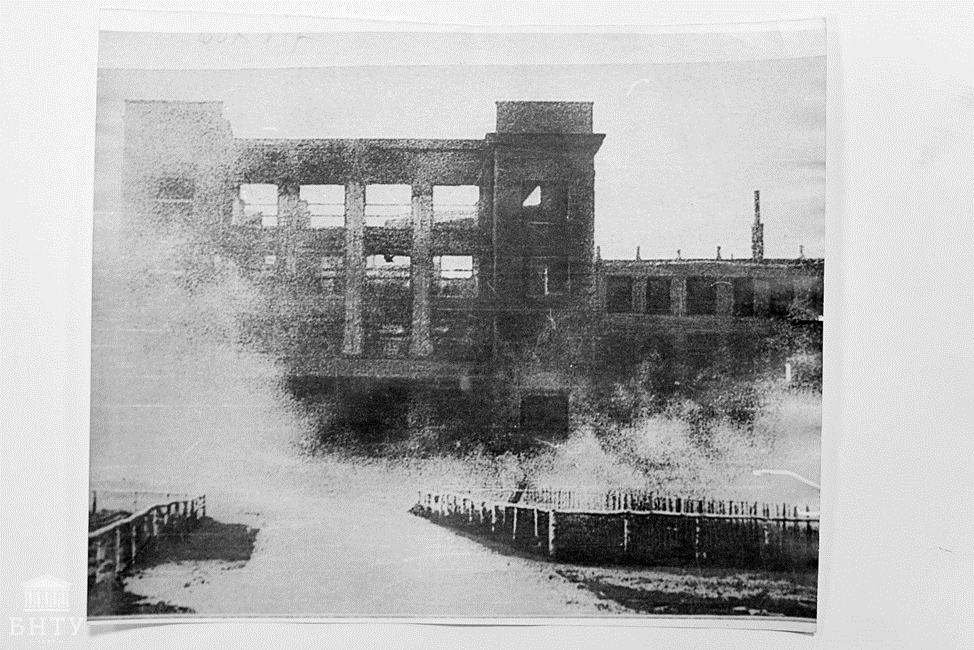
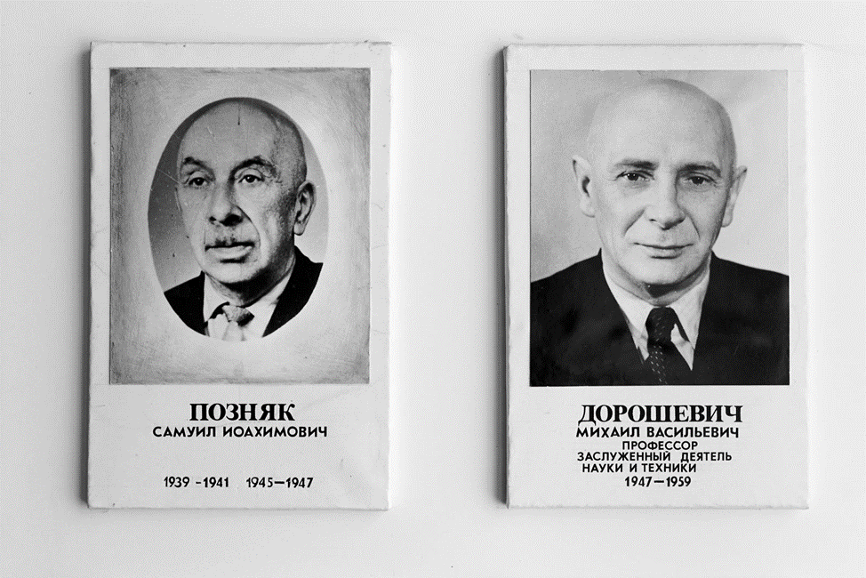
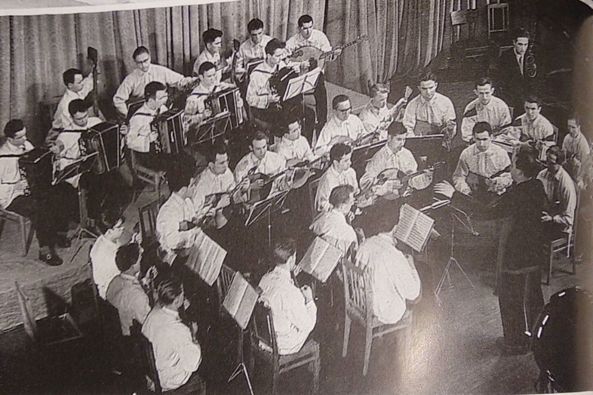

Большие и сложные задачи по восстановлению экономики Белоруссии в 20-е годы XX века требовали подготовки высококвалифицированных кадров для всех отраслей народного хозяйства. В связи с этим 10 декабря 1920 г. Минское политехническое училище типа «техникум» было преобразовано в высшее техническое учебное заведение "Белорусский государственный политехнический институт" (БГПИ) для подготовки инженеров с высшим образованием по главным направлениям производственной деятельности государства. Набор студентов осуществляли пять факультетов:
Первым директором (ректором) был назначен Н.К.Ярошевич. Преподавательский состав насчитывал около 50 человек. В первом учебном году в институте обучались 305 студентов и 119 слушателей подготовительного отделения. В дальнейшем, после ряда реорганизаций 1 июля 1933 г. Совнарком Белоруссии принимает решение о восстановлении политехнического института, в котором в сентябре 1933 г. работали 120 преподавателей и 20 кафедр. В институте обучались 1200 студентов.
В начале 40-х годов XX в. БПИ стал одним из ведущих технических вузов Советского Союза. На 32 кафедрах четырех факультетов велась подготовка инженеров по семи специальностям. Количество преподавателей увеличилось до 180, включая 19 профессоров и 71 доцента. За 1933-1941 гг. было подготовлено около 2000 инженеров. Великая Отечественная война прервала работу БПИ. Она возобновилась в 1945 г., когда к занятиям приступило 375 студентов. В 1949 г. количество студентов выросло до 1500 человек, на 37 кафедрах работали более 160 преподавателей.
За Победу в Великой Отечественной войне белорусам, впрочем, как и всем народам Советского союза, пришлось заплатить высокую цену. Необходимо было восстанавливать народное хозяйство и отстраивать тысячи городов, превращенные в руины. Страна как никогда нуждалась в инженерных кадрах. Уже 20 сентября 1944 года СНК БССР принимается постановление «О возобновлении деятельности Белорусского государственного политехнического института». На возобновление учебного процесса ушло немало времени, пришлось преодолеть серьезные трудности. Многие преподаватели и студенты погибли на войне. Большинство из выживших еще не вернулись из армии. Фашисты разрушили все учебные корпуса института и вывезли в Германию все материально-технические ценности (оборудование лабораторий, книги). Занятия были возобновлены только 1 марта 1945 года. К ним приступили 375 студентов, 65 преподавателей и 13 лаборантов. Подготовка кадров началась по восьми специальностям: технология машиностроения, автомобили и автомобильное хозяйство, промышленное и гражданское строительство, теплогазоснабжение и вентиляция, разработка торфяных месторождений, гидромелиорация, технология бродильных производств и технология силикатов. Директором института был назначен Позняк Самуил Иоахимович. Учиться было очень трудно. Не хватало учебных площадей, поэтому заниматься приходилось в три смены, часто в неотапливаемых подвальных и полуподвальных помещениях разрушенных зданий. Лекции читались в Институте физической культуры, Доме профсоюзов, средней школе № 13. Письменных принадлежностей и учебных пособий также не хватало, по многим дисциплинам один учебник приходилось делить на 8-9 студентов, не было бумаги, мастерских.
Но постепенно все трудности преодолевались. Институт стал пополнятся студенчеством и новыми профессиональными кадрами. Студенты и преподаватели дни напролет работали на строительстве и восстановлении родного вуза: и в воскресные, и в праздничные дни, и во время каникул. Одновременно ремонтировались приборы, аппараты, машины, станки; изготавливались наглядные пособия, восстанавливались лаборатории. 12 февраля 1946 года был издан приказ об открытии в БПИ энергетического факультета. Студентам строительного факультета в качестве дипломных проектов поручили спроектировать главный корпус. В конце 1946 года состоялся первый послевоенный выпуск 79-и молодых специалистов, которые были направлены на промышленные предприятия и стройки республики.
В 1947 году ректором университета назначается учёный-педагог и заслуженный деятель народного образования Дорошевич Михаил Васильевич. Он приложил много усилий для восстановления института. Под его руководством БПИ стал одним из крупнейших вузов СССР. В его честь на здании главного корпуса БНТУ установлена мемориальная доска, а его именем названа примыкающая к БНТУ улица. К началу 50-х гг. восстановительные работы были завершены. В 1951 году был восстановлен главный корпус, площади которого вдвое превысили довоенные. Кстати, до 1960 года Белорусский политехнический институт носил имя И. Сталина. Вы можете заметить различия в надписи на главном корпусе на фото ниже. В восстановленной части корпуса были оборудованы спортивный зал и лыжная база. Также силами студентов были построены две волейбольные и одна баскетбольная площадки, 120-метровая беговая дорожка, полоса препятствий на 150 метров и гимнастический городок. Институт имел 30 лабораторий и 15 кабинетов, оснащенных новой техникой и аппаратурой. Большую помощь нашему политеху оказали учебные заведения других союзных республик – вузы Москвы, Ленинграда и других городов, которые передали БПИ 67 200 экземпляров книг.
Институт рос и развивался по мере роста потребностей народного хозяйства. Создавались новые факультеты и кафедры, строились новые корпуса и общежития, на улице Якуба Коласа открылась студенческая столовая. Профилирующие кафедры привлекали к педагогической и научной работе опытных инженеров-практиков. Начал работу Ученый совет по присуждению ученой степени кандидата технических наук. Ведущими отраслями белорусской экономики в первое послевоенное десятилетие становятся машиностроение и металлообработка. В 1946 году были выпущены первые автомобили-самосвалы МАЗ-205 на Минском автомобильном заводе, а в 1947 году на Минском тракторном заводе начался серийный выпуск тракторов. Для работы на ведущих производствах страны требовались высококвалифицированные инженерные кадры. Так в 1951 году в БПИ начинает работу автотракторный факультет, а в 1958 году на базе механического факультета создаются машиностроительный и механико-технологический факультеты. Во второй половине 1950-х – первой половине 1960-х гг., когда в промышленности БССР разворачивается самая настоящая научно-техническая революция, целью которой стало немедленное воплощение в производство достижений науки, наш университет как никогда становится востребованным и превращается в крупнейшее высшее учебное заведение Беларуси, занимаясь обеспечением квалифицированными кадрами экономики БССР.
К появлению и становлению теперь уже ведущих отраслей промышленности Беларуси, возникших в результате научно-технической революции (машиностроение, радиотехническая, химическая промышленность), к открытию крупнейших предприятий Беларуси (БелАЗ, Минский приборостроительный завод, Солигорский калийный комбинат и др.) имели отношение и преподаватели, и выпускники БПИ. В это время в институтских лабораториях не только проводились учебные занятия, но и выполнялись заказы для промышленных предприятий республики. Научные разработки преподавателей, сотрудников и даже студентов БПИ внедрялись в производство, работники института проводили технические экспертизы и консультации, выполняли лабораторные испытания и анализы. Из ведущих предприятий БССР в адрес института направлялись многочисленные письма благодарности, а также станки, машины и другое оборудование. В БПИ имелись такие уникальные для того времени приборы, как электрический интегратор и ультразвуковой дефектоскоп. Это был большой успех в решении задач индустриализации. Обеспечение квалифицированными кадрами всех отраслей экономики БССР создало реальные условия для успешного послевоенного восстановления.
По мере развития в республике и СССР радио и телевидения усиливалась необходимость подготовки соответствующих кадров. В этих целях в 1960 году в БПИ создается радиотехнический факультет, который быстро встает на ноги. Здесь было создано 37 учебных лабораторий, подобраны хорошие преподаватели. В 1964 году этот факультет выделился в Минский радиотехнический институт (сегодня – БГУИР). С 50-х гг. БПИ было поручено оказывать различную помощь колхозам и совхозам республики, школам Минска и воинским частям. Преподаватели и студенты института ежегодно помогали в уборке урожая, в проведении работ по осушению и освоению болот, в строительстве гидроэлектростанций, в электрификации и радиофикации деревень. Важным направлением работы было шефство над школами. Около 100 студентов БПИ в 60-е годы работали в школах пионервожатыми, вели кружки «Юный техник», а также уроки физики и математики, руководили спортивными секциями. Памятным событием в истории института стало его награждение 7 января 1967 года орденом Трудового Красного Знамени за заслуги в подготовке высококвалифицированных инженерных кадров и развитии отечественной науки.
С 1967 года стали проводиться торжественные посвящения первокурсников в студенты. Ежегодно 1 сентября первокурсники принимали присягу, клялись соблюдать традиции и Устав своей альма-матер – БПИ. О стипендии политехников узнаем из воспоминаний студента БПИ 1967 года Семена Лам: «…Да ещё и сразу назначили стипендию. Она, правда, небольшая, всего 35 рублей в месяц, но за эту сумму мне надо было две недели на заводе работать… На день приходилась сумма в рубль пятнадцать копеек. Пообедать в студенческой столовой стоило, если я не ошибаюсь, копеек 70-80. Поэтому в столовой всегда съедалось много хлеба, намазанного горчицей, выпивалось много чая. Тарелка супа стоила копеек 12-15, поэтому иногда бралось только два первых. Многим приходилось подрабатывать, иногда ночами, на тяжёлых работах, таких, скажем, как разгрузка вагонов. К тому же, потом оказалось, что после первого семестра стипендию надо ещё и заслужить хорошими оценками при сдаче сессии.» На самом деле, студенты того времени не много чем отличались от нас, чему подтверждение еще одно воспоминание Семена Лам: «По окончании первого учебного года у нас были летние практические занятия в поле по обучению работе с теодолитом и нивелиром. Мы с огромными деревянными ящиками с этими приборами, штативами и огромными рейками на плечах облазили весь район Зелёного Луга, измерили его вдоль и поперёк, загорели как черти…
После окончания полевых работ пришла пора суммирования всех замеров, расчётов, черчения, в общем, выполнения курсовой работы. За выполнением этого курсового проекта мы пропадали на кафедре геодезии несколько дней и ночей, забывали есть, спать и ходить в туалет, и когда, наконец, спихнули его, почувствовали себя самыми счастливыми людьми на свете». В 70-х годах на базе вуза функционировала кафедра кибернетики и вычислительной техники, в БПИ было оборудовано 19 кабинетов, оснащенных аналоговыми и цифровыми вычислительными машинами МН-14, «Минск-22», «Одра-1204», «Проминь» и др. Они активно внедрялись в учебный процесс и научные исследования. Неотъемлемой частью жизни БПИ было самодеятельное художественное творчество. В институте действовали хор, оркестр народных инструментов, драматический и танцевальный коллективы. Заслуженным успехом пользовались выступления танцевального ансамбля «Славяночка», вокально-инструментального ансамбля «Зодчие» и команды КВН, которая в 1971 году на Всесоюзном телевизионном конкурсе команд вузов СССР получила диплом I степени и звание лауреата. Традиционными в вузе стали смотры-конкурсы под названием «Студенческая осень БПИ», в котором принимали участие прежде всего первокурсники, и «Студенческая весна БПИ», где демонстрировали свое мастерство коллективы и отдельные исполнители факультетов.
В это сложно поверить, но в далеких 1960-х гг. в инженерном вузе даже функционировал факультет общественных профессий. Студенты обучались на 8 отделениях, среди которых были изобразительное искусство, общественная киностудия, отделение фотокорреспондентов, культура речи. Зеркалом общественно-политической жизни института была вузовская газета «Советский инженер». Особое внимание газета уделяла организации питания студентов. Ее острые статьи и заметки, бичевавшие бесхозяйственность, нерасторопность руководителей и работников институтского общепита, способствовали улучшению работы столовых и буфетов. Белорусский политехнический институт с полным основанием можно было назвать и флагманом студенческого спорта республики. В институте работали 13 спортивных секций, проводились спартакиады по легкой атлетике, гимнастике, лыжам, плаванию, штанге, конькам, шахматам, волейболу и стрельбе. Вошли в традицию соревнования за кубок института, всегда массовыми были шахматные турниры. Высоких спортивных результатов добивались члены сборной института по борьбе дзюдо, гордостью вуза являлась баскетбольная команда. В историю спортивных достижений этих лет вписаны фамилии многих студентов и выпускников БПИ: чемпионы Олимпийских игр, мастера спорта СССР международного класса, рекордсмены БССР. К началу 80-х гг. спортивная база БПИ была лучшей среди вузов республики и позволяла заниматься практически всеми видами спорта всем желающим сотрудникам и студентам. В БПИ также функционировала оборонно-массовая организация ДОСААФ, в кружках которой готовили шоферов-любителей, мотоциклистов, парашютистов, радистов, телеграфистов. Регулярно проводились соревнования по стрелковому виду спорта.
До конца 1980-х гг. в БПИ появляются еще два факультета: факультет энергетического строительства и факультет «Роботы и робототехнические системы» (сегодня – ФИТР). Примечательно, что на ФРРС приезжали поступать абитуриенты со всего СССР, поскольку специальности, открытые там («Робототехнические системы и комплексы», «Программное обеспечение вычислительной техники и автоматизированных систем»), являлись новаторскими и перспективными, полностью соответствовали духу времени и вызывали небывалый интерес. БПИ начал подготовку подобных специалистов одним из первых в СССР.
В целом, развитие Белорусского политехнического института было связано с преодолением послевоенных разрушений, восстановлением народного хозяйства, формированием индустриального общества. Вклад БПИ в укрепление экономического потенциала республики был огромен, институт обеспечивал квалифицированными кадрами все отрасли экономики БССР. Из года в год вуз рос и развивался. На 1 сентября 1990 года на дневном отделении БПИ обучалось уже свыше 13 тысяч студентов. В целях повышения статуса вуза 17 апреля 1991 года было принято решение о преобразовании Белорусского политехнического института в Белорусскую государственную политехническую академию.
Наша история писалась людьми. Преподавателями БПИ, которые днем производили технические расчеты самосвалов МАЗ, ночами составляли учебные пособия, а в выходные дни отстраивали разрушенные фашистами учебные корпуса. Студентами, которые слушали лекции в сырых подвалах, а в свободное время обучали школьников математике и возводили гидроэлектростанции. История нашего родного БНТУ пишется и сегодня: каждым из нас, кто причастен к этому учебному заведению. Наши предшественники, находясь в сложнейших условиях, смогли не только восстановить БПИ от разрухи, но и трудились оставшиеся годы над тем, чтобы сегодня он назывался ведущим техническим вузом страны. А мы, их потомки, должны гордо нести это знамя.